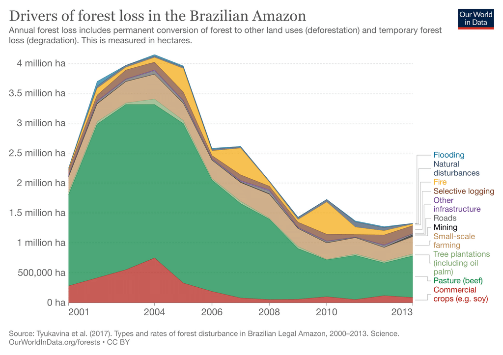

Three million species have been discovered in The Amazon - and who knows how many are yet undiscovered. The Amazon accounts for a whopping 10% of all discovered species on Earth.
The Amazon is under threat due to Agriculture and Logging. Vast swathes of the forest are cleared for cattle ranching in particular. The rainforest is also at risk due to wildfires. 17% of the Amazon rainforest has been destroyed in the last 50 years.
The Amazon is suffering from habitat destruction and habitat fragmentation. We may be as close as 10-15 years away from an irreversible tipping point in The Amazon's ecosystem if business continues as usual.
